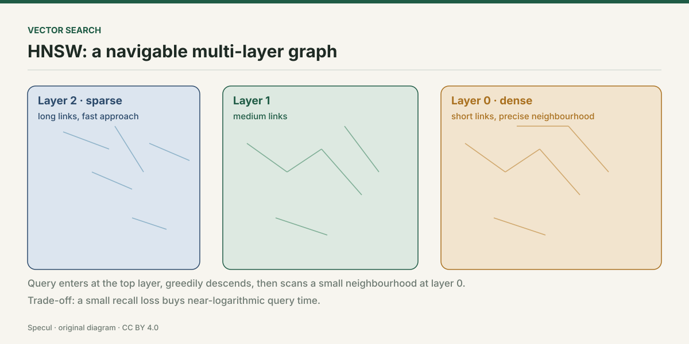

近似最近邻检索（ANN）Approximate Nearest Neighbor Search (ANN)
Approximate Nearest Neighbor Search (ANN)
解决什么问题What problem it solves
在海量向量里快速找出与查询最相近的一小批，允许少量漏检。Find the nearest vectors to a query quickly among billions, accepting a small amount of missed recall.
这是什么What it is
精确最近邻在大规模下太慢，ANN 用图索引、量化或哈希做近似。
HNSW 用多层可导航图，把查询复杂度降到近似对数级。
Exact nearest-neighbor search is too slow at scale; ANN approximates with graph indexes, quantization or hashing.
HNSW uses a multi-layer navigable graph and brings query cost close to logarithmic.

为什么需要知道Why it matters
向量库的核心就是 ANN；召回率、内存和延迟要一起调，换索引参数会改变检索质量。ANN is the core of a vector database. Recall, memory and latency must be tuned together; changing index parameters changes retrieval quality.
别名Chinese aliases
ANN · 近似最近邻 · 向量检索 · ANN 检索
同域词条Terms in the same area
现在能做什么What you can do now
回到名词地图看第5站的其他 38 个词 →Back to the map: the other 38 terms in station 5 →